Tous les Habitats
- Forêt tropicale

Retrouvez ici la faune et la flore de nos forêts tropicales, de l'Amazonie en passant par le Bassin du Congo et l'Asie du Sud-Est. Vous y retrouverez nos somptueux Tigres d'Asie du Sud, ainsi que des Tapirs, Paresseux (attention, il faut bien chercher ! À vous de jouer les enfants) et aussi les effrayants Crocodiles.
- Savane africaine

Ici, vous verrez le roi de la Savane ! Nous parlons bien sûr du Lion avec sa magnifique crinière de feu, mais aussi des éléphants (espèces protégées), des hyènes, des girafes et bien d'autres encore.
- Zone arctique

Plongez avec nous dans l'univers glacial de l'Arctique ! Venez découvrir le géant des glaces, l'Ours Polaire (espèce en voie de disparition), mais aussi les tout mignons Pingouins, ainsi que le magnifique Renard Polaire.
- Zone Aquatique 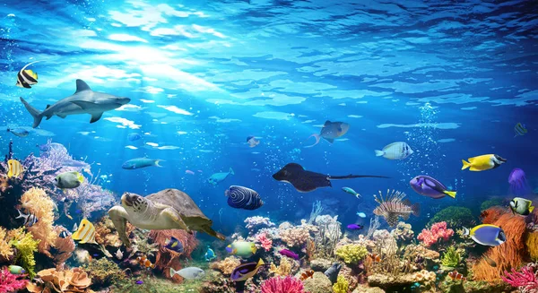
Embarquez à bord ! Nous partons découvrir nos Océans ! Ici, vous découvrirez le redoutable Requin Blanc, mais aussi de magnifiques Raies Mantas, Orques et surtout les protecteurs des navigateurs, les Dauphins !
Nos Animaux
Forêt Tropicale
Le Tigre : Nom : Baguéra
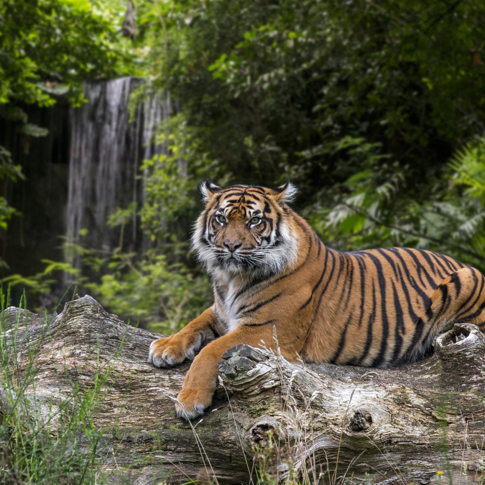
Age : 5 Ans
Etat de Sante : Baguéra sort de Quarantaine suite à son arriver chez nous
Alimentation : Carnivore, 15 kg de viande par repas
Mensuration : De 80 cm à 1m au garot et peut peser jusqu'à 300kg
Le Tapir : Nom : Fumesec
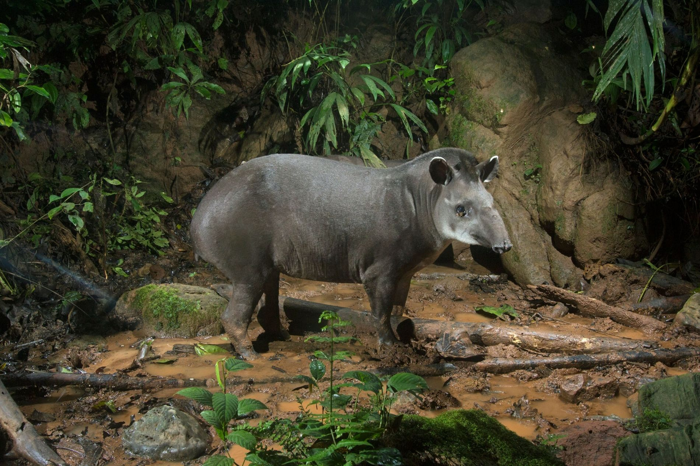
Age : 10 Ans
Etat de Santé : Se porte à merveille
Alimentation : Végétarien
Mensuration : Longueur : 1m50 à 2m
Hauteur au Garrot : 70 cm à 1m
Poids : 150 kg à 300 kg
Paresseux : Nom : Cid
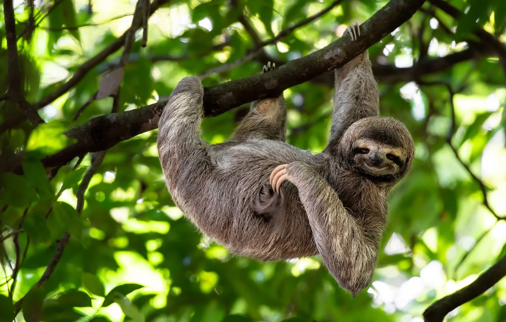
Age : 25 ans
Etat de Santé : Tres Bon
Alimentation : Végéetarien
Mensuration : Longueur : 42 à 80 cm
Poids :2.2 à 6.3 kg
Crocodile : Nom : Enzo le Croco

Age : 30 ans
Etat de Santé : Préoccupant
Alimentation : Carnivore
Mensuration : Longueur : 7m
La Savane
Le Lion : Nom : Mufasa
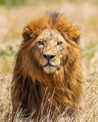
Age : 10 ans
Etat de Santé : Bonne Santé
Alimentation : Carnivores
Mensuration : Longueur : 1.6 à 2.5m
Hauteur au Garrot : 1.2m
Poids : 150 à 250 kg
L'Elephant : Nom : Pumba
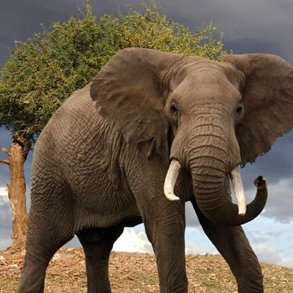
Age : 40 Ans
Etat de Santé : Bon
Alimentation : Herbivore
Mensuration : Longueur : 6.5 à 7.5m
Garrot : 3.5m
Poids : 5 à 8 tonnes
La Hyene : Nom : Shenzi

Age : 8 ans
Etat de Santé : RAS
Alimentation : Charognare
Mensuration : Longueur : Jusqu'à 1.20 m
Hauteur : 80 cm
Poids : entre 20 et 40 kg
La Zone Arctique
Ours Polaire : Nom : Ted
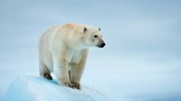
Age : 20 ans
Etat de Santé : RAS
Alimentation : Omnivore avec une Prédominance Carnivore
Mensuration : Taille : 1.8 à 2 m
Hauteur au Garrot : 1 à 1.5 m
Poids : Femelle : 200 à 400 kg
Mâle : 400 à 800 kg
Le Pingouin : Nom : Rowalski
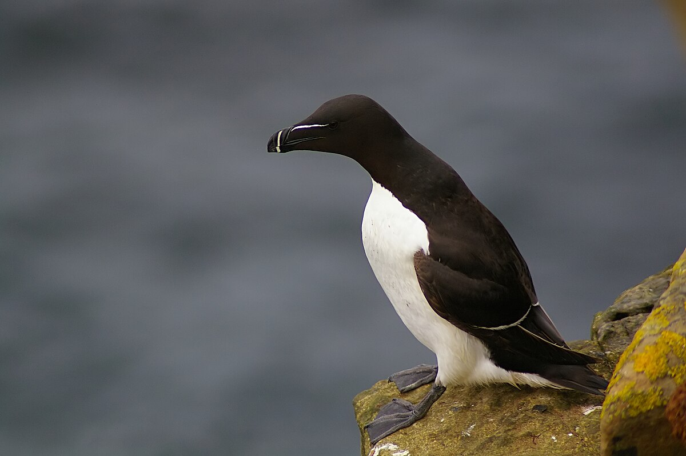
Age : 10 ans
Etat de santé : Sortie de Quarantaine
Alimentation : Carnivore
Mensuration : Taille : 35 à 45 cm
Envergure : 60 à 70 cm
Poids : 500 à 800g
Le renard Polaire : Nom : Mouflette

Age : 5 ans
Etat de santé : Bon
Alimentation : Omnivore
Mensuration : Taille : 55 cm + queue de 30cm
Hauteur au garrot : 30 cm
Poids : 4 à 9 kg
Zone Aquatique
Requin Blanc : Nom : Brutus
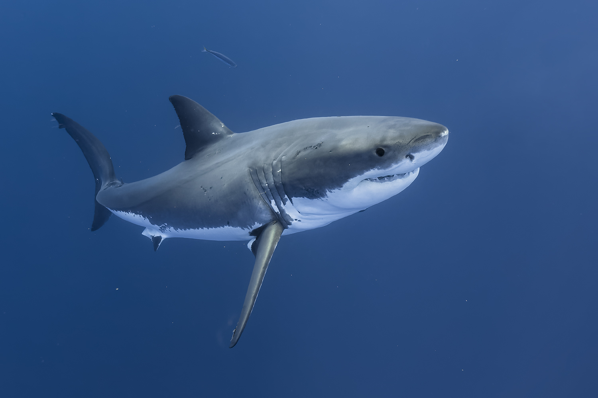
Age : 45 ans
Etat de santé : RAS
Alimentation : Carnivore
Mensuration : Longueur : 4 à 6 m
Poids : Femelle : 1000 à 1900 kg
Mâle : 600 à 1200 kg
Raie Manta : Nom : Chumy
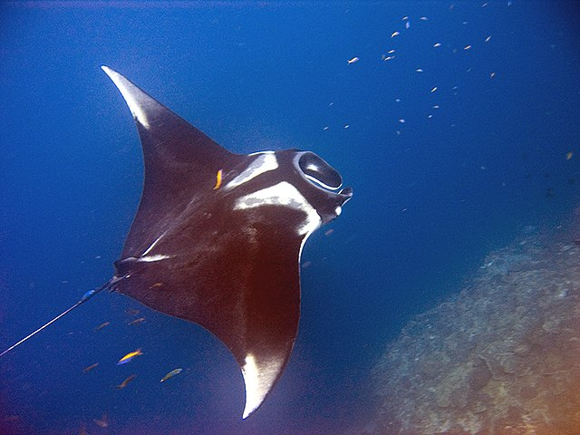
Age : 25 ans
Etat de santé: Normal
Alimentation : Omnivore
Mensuration : Longueur : 4 à 5 m
Envergure : 7 m
Poids : 2 tonnes
Orques : Nom : Willy
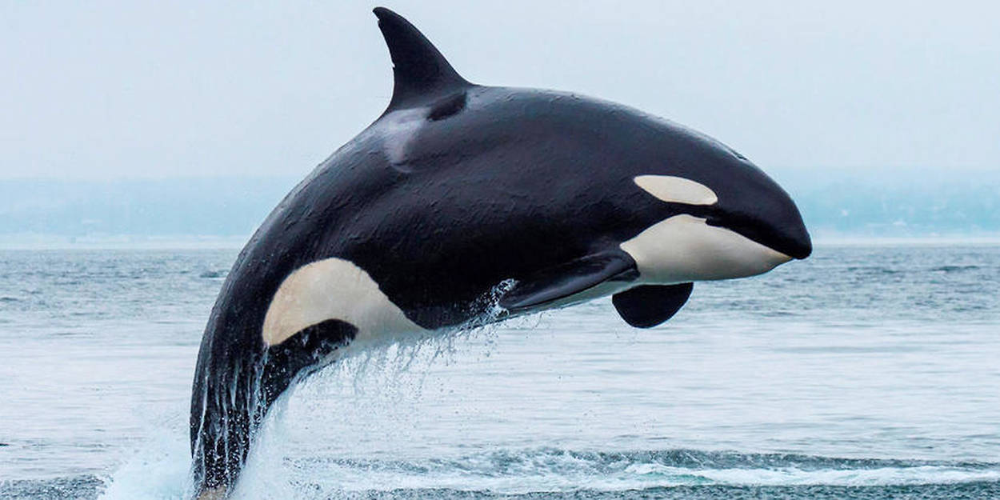
Age : 15 ans
Etat de santé : Fin de vie
Alimentation : Carnassier
Mensuration : Taille : 5 à 7 m
Aileron dorsale 0.5 à 2 m
Poids : 2.5 à 7 tonnes
Dauphin : Nom : Flipper
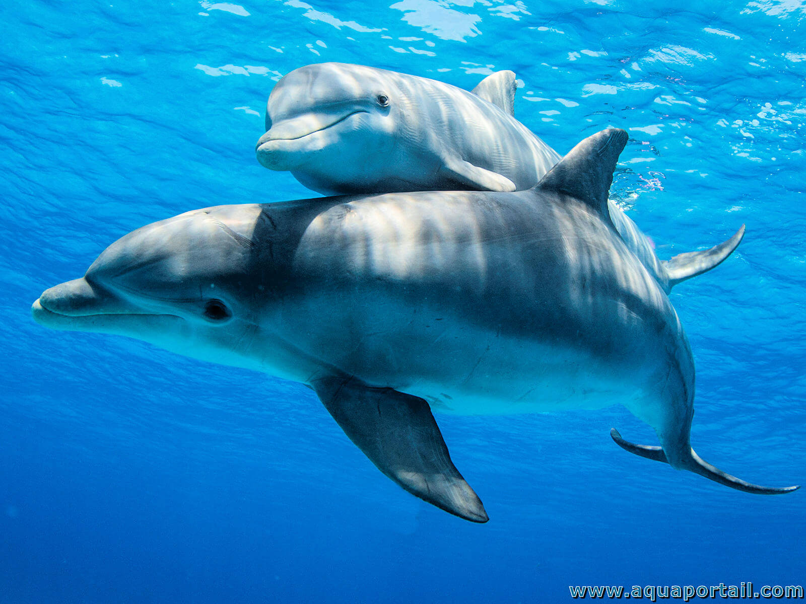
Age : 19 ans
Etat de santé : En forme
Alimentation : Carnivore
Mensuration : Taille : 1.8 à 2 m
Poids : 150 à 500 kg